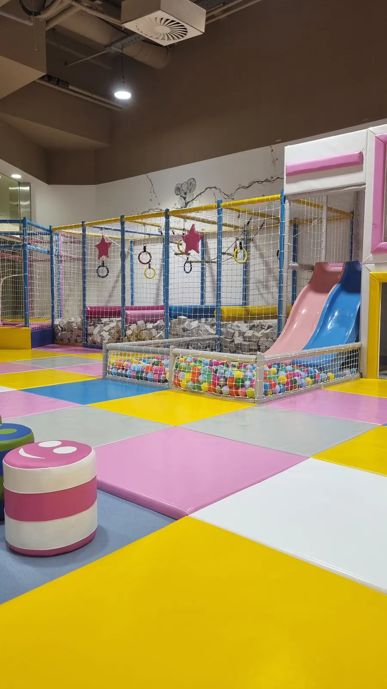
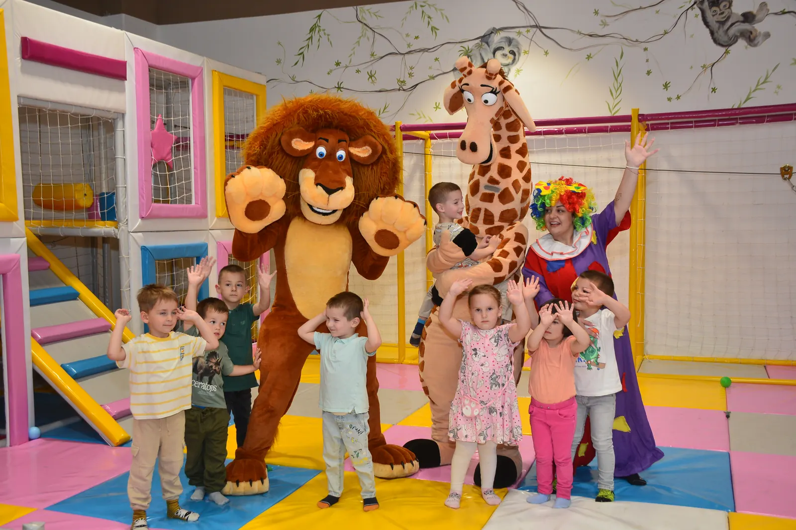
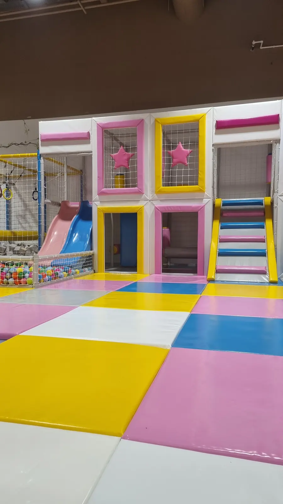
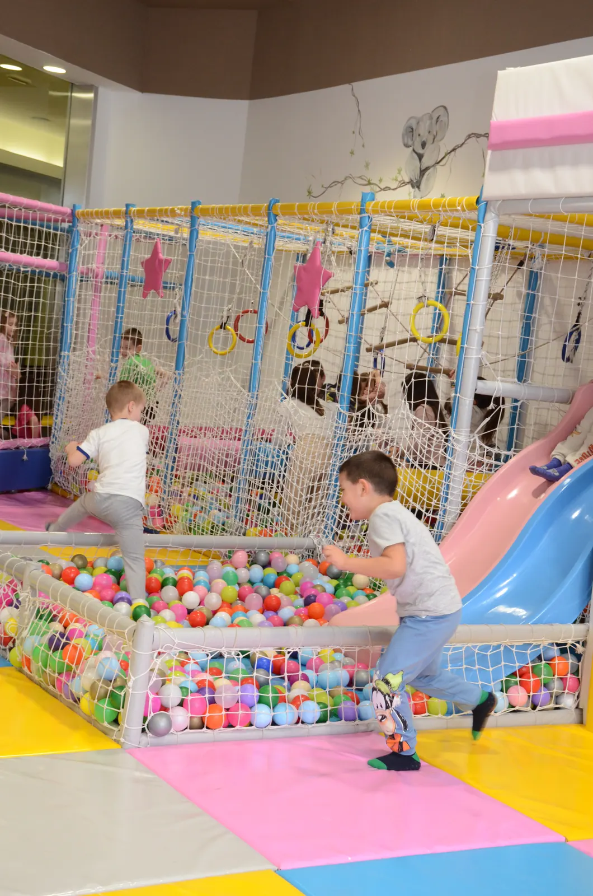
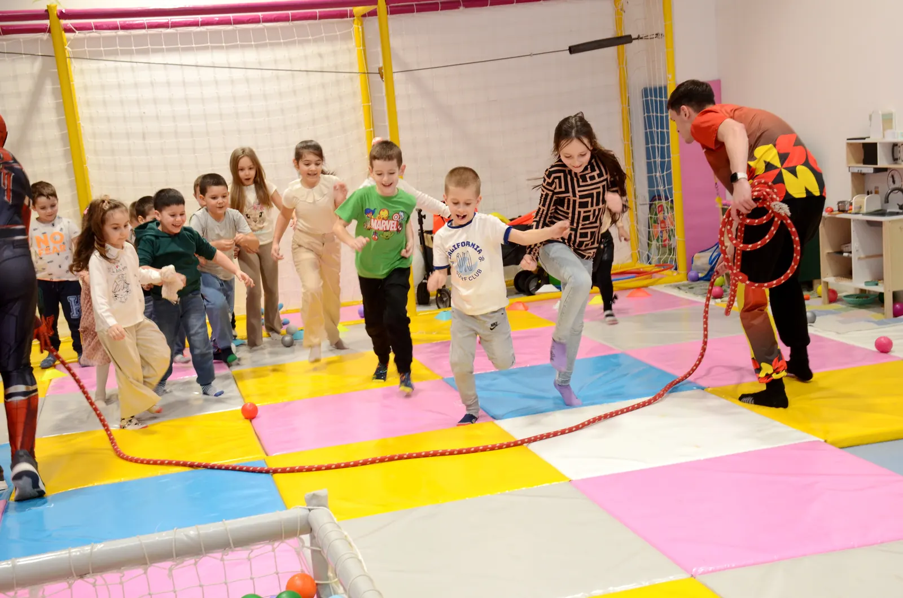
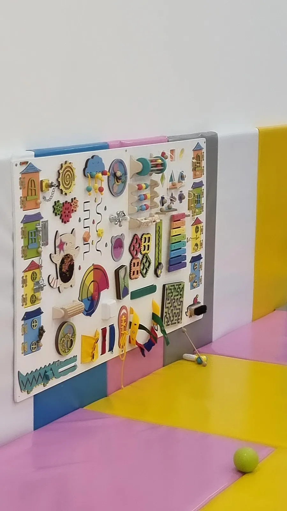
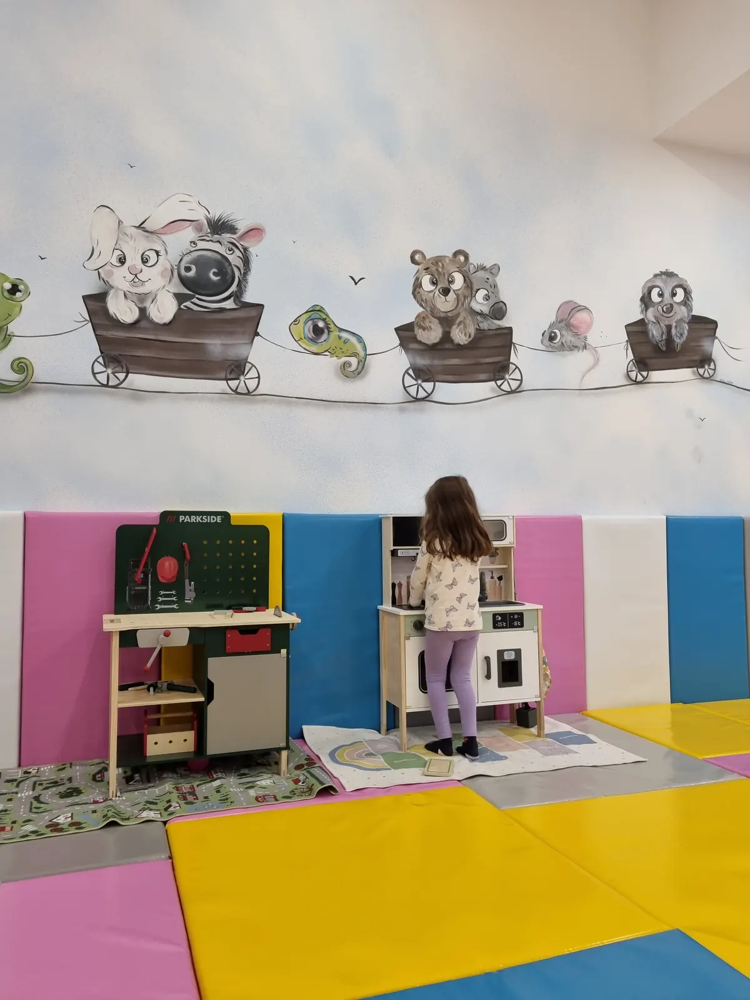
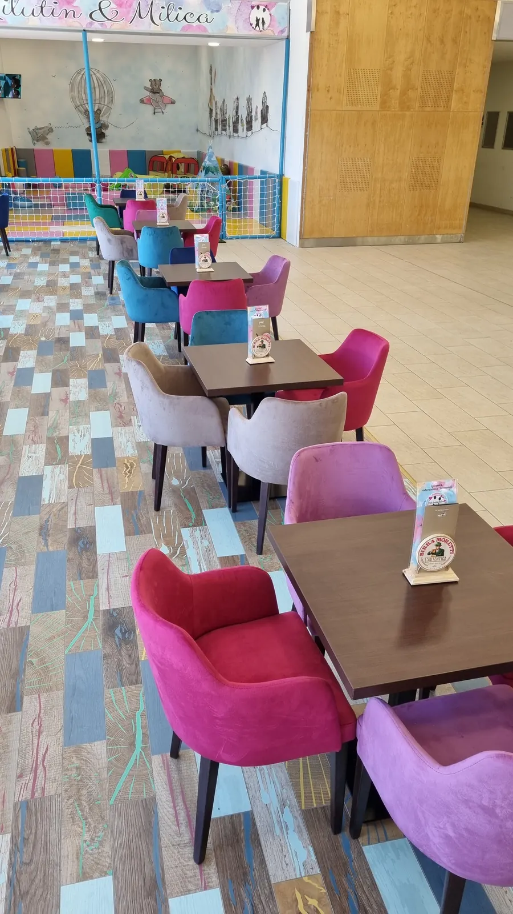

Avantura staza
Penjanje, provlačenje i istraživanje. Deo u kome stariji mališani troše energiju.
Početna › Igraonica
TC Roda, 2. sprat · Svakog dana 09–21h
Preko 300 m² prostora za igru u TC Roda. Avantura staza, tobogani, bazen sa lopticama, sportski kutak i poseban bebi kutak, a pored igraonice kafić za roditelje.

Šta ima u igraonici
Igraonica je podeljena na zone, tako da i starija deca i bebe imaju svoj prostor. Sve je u jednom klimatizovanom i nepušačkom prostoru, uz osoblje koje je uvek prisutno.

Penjanje, provlačenje i istraživanje. Deo u kome stariji mališani troše energiju.

Tobogani i lavirint za trčanje, skrivanje i spuštanje, na mekim podlogama.

Klasik svake igraonice, uvek pun smeha.

Trčanje, skakanje i igre u grupi, uz naše osoblje.

Odvojen deo za najmlađe: zidna tabla sa igračkama, meke kocke i lopte.

Mesto za mirniju igru i maštu: kuhinjice, igračke i igra uloga.

Za roditelje
Galerija
Kafić za roditelje sa sladoledom, kafom i sokovima, i trenuci igre i zabave iz naše igraonice u TC Roda.
Cena igraonice
Cena se računa po satu igre. Jasno i bez iznenađenja.
Treba vam da dete ostane samo dok obavite kupovinu ili posao? Za to je tu čuvaonica, 550 din / sat.
500 din / sat
Česta pitanja
Igranje u igraonici Milutin i Milica košta 500 dinara po satu.
Na drugom spratu TC Roda, Save Kovačevića 48a, Kragujevac. Parking je besplatan.
Da. Bebi kutak je odvojen deo sa kuhinjicama, mekim kockama i loptama, za najmlađu decu.
Da. Pored igraonice je kafić u odvojenoj nepušačkoj zoni, odakle vidite decu.
Da, kroz našu čuvaonicu. Čuvanje dece košta 550 dinara po satu i dete je sve vreme uz naše osoblje.